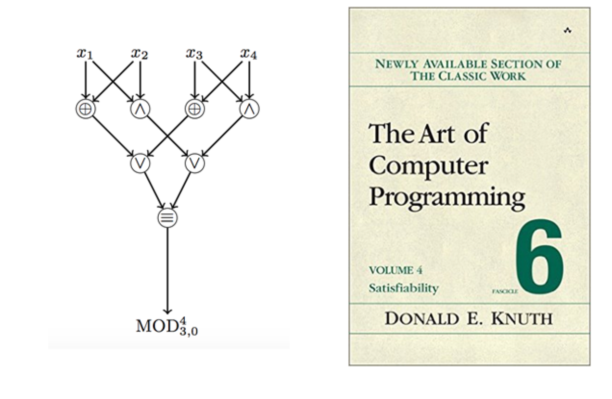

I am working on efficient algorithms for scalable data analysis including:
- Approximation, distributed, streaming and online algorithms
- Learning theory and property testing
- Communication and information complexity
- Data privacy and targeted alternatives to bulk data collection
This semester I am organizing the Theory Seminar. Recently created/taught/organized:
- “The Big Data Theory” Blog. Subscribe via RSS.
- CIS 700 “algorithms for Big Data”: class at the University of Pennsylvania that I developed in Fall'15.
- CIS 625 “Computational Learning Theory”: class at the University of Pennsylvania in Spring'15 (co-taught with Michael Kearns).
- The Big Data Reading Group at the University of Pennsylvania in 2014–2015.
- Algorithms for MapReduce and Beyond: tutorial at CIKM'15 in Melbourne.
- Sublinear Algorithms for Big Data: 15-hour crash course at the University of Buenos Aires (Summer 2014).
- Big Data Through the Lens of Sublinear Algorithms: 2-day workshop at Rutgers University, DIMACS (August 27–28, 2015).
- Algorithmic Frontiers of Modern Massively Parallel Computation: 1-day workshop at the ACM Federated Computing Research Conference (June 14, 2015).
- Sublinear Algorithms and Big Data Day: Sublinear Day #1 (Brown University, April 2014), Sublinear Day #2 (MIT, April 2015).
News
- 04/05/16 – 04/06/16: University G.
- 03/09/16 – 03/10/16: University F.
- 02/29/16: University E.
- 02/25/16 – 02/26/16: University D.
- 02/22/16: University C.
- 02/18/16: University B.
- 02/08/16: University A.
- 01/08/16: Talk “Lp-Testing” at the Johns Hopkins University workshop on sublinear algorithms. See also open problems.
- 12/22/15: I am on the program committee of SODA 2017 (28th Annual ACM-SIAM Symposium on Discrete Algorithms).
- 11/24/15: Paper “Privacy for the Protected (Only)” accepted to PNAS (Proceedings of the National Academy of Sciences) via direct submission.
- 10/19/15: Algorithms for MapReduce and Beyond: tutorial at CIKM'15 in Melbourne.
- 09/11/15: Paper in SODA'16: Tight Bounds on Linear Sketches of Approximate Matchings.
- 08/27/15 — 08/28/15: Co-organizing the “Big Data Through the Lens of Sublinear Algorithms” workshop at Rutgers University, DIMACS.
- 08/26/15: I am teaching CIS 700: algorithms for Big Data at the University of Pennsylvania in Fall'15.
- 08/22/15: I am on the program committee of ESA 2016, Track A (24th European Symposium on Algorithms).
- 08/06/15: Talk “Fast Fourier Sparsity Testing over the Boolean Hypercube” at the Univeristy of Wisconsin, Madison.
- 07/15/15: Talk “Parallel Algorithms for Geometric Graph Problems” at ISMP 2015 (22nd International Symposium on Mathematical Programming).
- 06/14/15: Co-organizing the “Algorithmic Frontiers of Modern Massively Parallel Computation” workshop at FCRC 2015 (Federated Computing Research Conference).
- 06/01/15: Preprint: Privacy for the Protected (Only).
- 05/06/15: Preprint: Tight Bounds on Linear Sketches of Approximate Matchings.
- 05/04/15: Talk “Near Optimal LP Rounding for Correlation Clustering” at Cornell University, Ithaca, NY.
- 04/14/15: Paper in ICALP'15: Amplification of One-Way Information Complexity via Codes and Noise Sensitivity.
- 04/10/15: Second “Sublinear Algorithms and Big Data Day” at MIT.
- 04/09/15: Talk “Near Optimal LP Rounding for Correlation Clustering” at MIT, Boston, MA.
- 03/12/15: Talk “Near Optimal LP Rounding for Correlation Clustering” at Microsoft Research, Redmond, WA.
- 03/06/15: Preprint: Amplification of One-Way Information Complexity via Codes and Noise Sensitivity.
- 02/17/15: Google Tech Talk “Near Optimal LP Rounding for Correlation Clustering” at Google, NYC.
- 02/03/15: Paper in STOC'15: Near Optimal LP Rounding Algorithm for Correlation Clustering on Complete and Complete k-partite Graphs.
- 01/28/15: Talk “Near Optimal LP Rounding for Correlation Clustering” at Rutgers University, New Brunswick, NJ.
- 01/21/15: Talk “ Near Optimal LP Rounding for Correlation Clustering” at Carnegie Mellon University, Pittsburgh, PA.
- 01/20/15: Talk “ Near Optimal LP Rounding for Correlation Clustering ” at Pennsylvania State University, State College, PA.
- 12/02/14: Preprint: Near Optimal LP Rounding Algorithm for Correlation Clustering on Complete and Complete k-partite Graphs.
- 11/19/14: Talk “Parallel Algorithms for Geometric Graph Problems” at Johns Hopkins University, Baltimore, MD.
- 10/30/14: Talk “Parallel Algorithms for Geometric Graph Problems” at University of Maryland, College Park, MD.
- 10/24/14: Talk “Lp-Testing” at Columbia University, New York, NY.
- 10/12/14: I have started a blog The Big Data Theory, which will cover algorithms for large data processing.
- 09/12/14: I am organizing the Big Data Reading Group at the University of Pennsylvania.
- 08/29/14: Talk “Parallel Algorithms for Geometric Graph Problems” at the University of Pennsylvania, Philadelphia, PA.
- 08/15/14: I am organizing the Computer and Information Sciences Theory Seminar at the University of Pennsylvania.
- 07/28/14 — 08/01/14: I was teaching a 15-hour crash course “Sublinear Algorithms for Big Data” at the 28th International School on Informatics ECI 2014 at the University of Buenos Aires, Argentina.
- 07/30/14: Preprint: Going for Speed: Sublinear Algorithms for Dense r-CSPs.
- 07/16/14: Talk “Beyond Set Disjointness: the Communication Complexity of Finding the Intersection” at the 33rd Annual ACM SIGACT-SIGOPS Symposium on Principles of Distributed Computing (PODC 2014), Paris, France.
- 06/13/14: Talk “Lower Bounds for Testing Properties of Functions over Hypergrids” at the 29th IEEE Conference on Computational Complexity (CCC 2014), Vancouver, BC.
- 06/06/14: Paper in RANDOM'14: Certifying Equality with Limited Interaction.
- 06/01/14: Talk “Lp-Testing” at the 46th ACM Symposium on the Theory of Computing (STOC 2014), New York, NY.
- 05/19/14: Talk “Parallel Algorithms for Geometric Graph Problems” at the University of Massachusetts, Amherst, MA.
- 05/16/14: Talk “Beyond Set Disjointness: the Communication Complexity of Finding the Intersection ” at MIT Theory of Distributed Systems Seminar, Boston, MA.
- 04/28/14: I am on the PC for the 41st International Conference on Current Trends in Theory and Practice of Computer Science (SOFSEM'15), Foundations of Computer Science Track (chair: Roger Wattenhofer). Deadlines are here.
- 04/20/14: Paper in PODC'14: Beyond Set Disjointness: The Communication Complexity of Finding the Intersection.
- 04/18/14: I organized the Sublinear Algorithms and Big Data Day at Brown ICERM.
- 04/03/14: Google Tech Talk “ Parallel Algorithms for Geometric Graph Problems ” at Google Research, NYC.
- 03/27/14: Talk “Parallel Algorithms for Geometric Graph Problems” at Stanford University, Stanford, CA.
- 03/25/14: Talk “Parallel Algorithms for Geometric Graph Problems” at Sandia Labs, Livermore, CA.
- 03/05/14: Talk “The Big Data Theory and Randomized Algorithms” at Georgia Tech, Atlanta.
- 02/25/14: Talk “Approximating Graph Problems: The Old and The New” at Yahoo! Research, NYC.
- 02/19/14: Talk “Approximating Graph Problems: The Old and The New” at MIT Algorithms and Complexity Seminar.
- 02/17/14: Talk “Approximating Graph Problems: The Old and The New” at Toyota Technological Institute at Chicago.
- 02/09/14: I will be teaching a crash course "Sublinear Algorithms for Big Datasets" at the University of Buenos Aires (July 28 – August 01)
- 02/04/14: 2 papers in STOC'14, 1 paper in CCC'14:
Papers (authors listed in alphabetical order unless otherwise specified)
Selected Publications
-
M. Kearns, A. Roth, S. Wu, G. Yaroslavtsev Private Algorithms for the Protected in Social Network Search [Preprint on arXiv].
PNAS 2016 (Proceedings of the National Academy of Sciences), via direct submission.
Press coverage: Quartz, Pacific Standard, Wired (German), The Naked Scientists Podcast and Vice Motherboard.
-
P. Berman, S. Raskhodnikova, G. Yaroslavtsev Lp-Testing [Draft (pdf)]
STOC 2014 (46th ACM Symposium on the Theory of Computing).
Simple introduction by Sofya Raskhodnikova in the Encyclopedia of Algorithms (Springer).
Open problems from JHU workshop on Sublinear Algorithms [pptx, pdf].
Oded Goldreich's review on “My Choices”. Property Testing Review Post 1, Post 2. -

A. Andoni, A. Nikolov, K. Onak, G. Yaroslavtsev Parallel Algorithms for Geometric Graph Problems [Preprint on arXiv].
STOC 2014 (46th ACM Symposium on the Theory of Computing).
Notes by Thomas Steinke from Jelani Nelson's Algorithms for Big Data Course at Harvard
Notes by Kui Tang from Alex Andoni's Algorithmic Techniques for Massive Data Course at Columbia. -
P. Berman, A. Bhattacharyya, K. Makarychev, S. Raskhodnikova, G. Yaroslavtsev Approximation Algorithms for Spanner Problems and Directed Steiner Forest [Full version (pdf)]
ICALP 2011, Track A (38th International Colloquium on Automata, Languages and Programming), special issue of “Information and Computation”.
Runner-up for the Best Paper Award.
Open Problem #2 from the Princeton Workshop on Approximation Algorithms. See also my slides. -
Cited multiple times in Volume 4B of Donald E. Knuth's “The Art of Computer Programming”. A. Kojevnikov, A. Kulikov, G. Yaroslavtsev Finding Efficient Circuits Using SAT-solvers [Full text: (pdf)]
SAT 2009 (12th International Conference on Theory and Applications of Satisfiability Testing).
Notes by Ryan Williams from his class Topics in Circuit Complexity at Stanford.
Extension in Information Processing Letters as E.Demenkov, A.Kojevnikov, A.Kulikov, G.Yaroslavtsev “New upper bounds on the Boolean Circuit Complexity of Symmetric Functions” [Full text: (pdf)]
Other Publications
-
S. Assadi,
S. Khanna,
Y. Li,
G. Yaroslavtsev
Maximum Matchings in Dynamic Graph Streams and the Simultaneous Communication Model [Preprint on arXiv].
SODA 2016 (27th Annual ACM-SIAM Symposium on Discrete Algorithms).
-
M. Molinaro,
D. Woodruff,
G. Yaroslavtsev
Amplification of One-Way Information Complexity via Codes and Noise Sensitivity [Preprint on ECCC].
ICALP 2015, Track A (42nd International Colloquium on Automata, Languages and Programming).
-
S. Chawla,
K. Makarychev,
T. Schramm,
G. Yaroslavtsev
Near Optimal LP Rounding Algorithm for Correlation Clustering on Complete and Complete k-partite Graphs [Preprint on arXiv]
STOC 2015 (47th ACM Symposium on the Theory of Computing).
-
J. Brody,
A. Chakrabarti,
R. Kondapally,
D. Woodruff,
G. Yaroslavtsev
Certifying Equality with Limited Interaction
RANDOM 2014 (18th International Workshop on Randomization and Computation).
- Full version in the special issue of Algorithmica on “Information Complexity and Applications”
-
J. Brody,
A. Chakrabarti,
R. Kondapally,
D. Woodruff,
G. Yaroslavtsev
Beyond Set Disjointness: The Communication Complexity of Finding the Intersection
PODC 2014 (33rd Annual ACM SIGACT-SIGOPS Symposium on Principles of Distributed Computing).
-
E. Blais,
S. Raskhodnikova,
G. Yaroslavtsev
Lower Bounds for Testing Properties of Functions over Hypergrid Domains [Preliminary full version (pdf)][ECCC]
CCC 2014 (29th IEEE Conference on Computational Complexity).
-
M. Molinaro,
D. Woodruff,
G. Yaroslavtsev
Beating the Direct Sum Theorem in Communication Complexity with Applications to Sketching [Camera-ready version (pdf)]
SODA 2013 (24th Annual ACM-SIAM Symposium on Discrete Algorithms).
-
S. Raskhodnikova,
G. Yaroslavtsev
Learning Pseudo-Boolean k-DNF and Submodular Functions [Preprint on arXiv]
SODA 2013 (24th Annual ACM-SIAM Symposium on Discrete Algorithms).
-
G. Yaroslavtsev*,
G. Cormode,
Cecilia M. Procopiuc,
Divesh Srivastava
Accurate and Efficient Private Release of Datacubes and Contingency Tables [Preprint on arXiv]
ICDE 2013 (29th IEEE International Conference on Data Engineering).
- * This is the only paper with non-alphabetical ordering of authors.
-
P. Berman,
G. Yaroslavtsev
Primal-Dual Algorithms for Node-Weighted Network Design in Planar Graphs [Preliminary full version (pdf)]
APPROX 2012 (15th International Workshop on Approximation Algorithms for Combinatorial Optimization Problems).
-
V. Karwa,
S. Raskhodnikova,
A. Smith,
G. Yaroslavtsev
Private Analysis of Graph Structure [Camera-ready version (pdf)]
VLDB 2011, Research track (37th International Conference on Very Large Data Bases).
- Full version in ACM Transactions on Database Systems.
-
P. Berman,
A. Bhattacharyya,
E. Grigorescu,
S. Raskhodnikova,
D. Woodruff,
G. Yaroslavtsev
Steiner Transitive-Closure Spanners of d-Dimensional Posets [Camera-ready version (pdf)]
ICALP 2011, Track A (38th International Colloquium on Automata, Languages and Programming).
- Full version in Combinatorica.
Preprints
-
G. Yaroslavtsev
Going for Speed: Sublinear Algorithms for Dense r-CSPs [Preprint on arXiv].
-
N. Devanur,
K. Makarychev,
D. Panigrahi,
G. Yaroslavtsev
Online Algorithms for Machine Minimization [Preprint on arXiv].
Talks
-
Fast Fourier Sparsity Testing over the Boolean Hypercube [Slides: (pptx), (pdf)]
- University of Wisconsin, Madison. Theory Seminar. August 06, 2015.
-
Near Optimal LP Rounding for Correlation Clustering [ Video from MSR (link)] [Slides: (pptx), (pdf)]
- Cornell University, Ithaca, NY. Theory Seminar. May 04, 2015.
- MIT, Boston, MA. Algorithms and Complexity Seminar. April 09, 2015.
- Microsoft Research, Redmond, WA. March 12, 2015.
- Google Research, NYC. Google Tech Talk. February 17, 2015.
- Rutgers University, New Brunswick, NJ. Theory Seminar. January 28, 2015.
- Carnegie Mellon University, Pittsburgh, PA. Theory Lunch. January 21, 2015.
- Pennsylvania State University, State College, PA. Departmental colloquium. January 20, 2015.
-
Lower Bounds for Testing Properties of Functions over Hypergrids [Slides: (pptx), (pdf)]
- 29th IEEE Conference on Computational Complexity (CCC 2014), Vancouver, BC. June 13, 2014.
-
Beyond Set Disjointness: the Communication Complexity of Finding the Intersection [Slides: (pptx), (pdf)]
- 33rd Annual ACM SIGACT-SIGOPS Symposium on Principles of Distributed Computing (PODC 2014), Paris, France.
- MIT, Boston, MA. Theory of Distributed Systems Seminar. May 16, 2014.
-
“The Big Data Theory” and Randomized Algorithms
- Georgia Tech, Atlanta, GA. March 05, 2014.
-
Approximating Graph Problems: The Old and The New
- Yahoo! Research, NYC. February 25, 2014.
- MIT, Boston, MA. Algorithms and Complexity Seminar. February 19, 2014.
- Toyota Technological Institute, Chicago, IL. February 17, 2014.
- Brown University, Providence, RI. ICERM Theory Seminar. January 31, 2014.
-
Lp-Testing
[Slides: (pptm), (pdf))]
- Johns Hopkins University, Sublinear Algorithms Workshop. January 08, 2016.
- Columbia University, Theory seminar. October 24, 2014.
- 46th ACM Symposium on Theory of Computing (STOC 2014). June 01, 2014.
- Microsoft Research, Redmond, Theory lunch. January 08, 2014.
- Harvard University, Theory seminar. November 12, 2013.
- Brown University, Providence, RI. Theory seminar. November 1, 2013.
- IBM Almaden Research Center, San Jose, CA. Theory seminar. October 25, 2013.
- Property Testing and Communication Complexity
[Slides: (pptx), (pdf)]
- MIT, Boston, MA. Algorithms and Complexity Seminar. September 11, 2013.
- Accurate and Efficient Private Release of Datacubes and Contingency Tables
- Beating the Direct Sum Theorem in Communication Compelxity
- Aarhus University, Denmark. Theory seminar. May 22, 2013.
- MIT, Boston, MA. Algorithms and Complexity seminar. December 13, 2012.
- Princeton University, Princeton, NJ. Theory lunch. November 16, 2012.
- Overlapping Clustering with Qualitative Information
- 53rd IEEE Symposium on Foundations of Computer Science (FOCS 2012). Poster session. October 22, 2012.
- Parallel Algorithms for Geometric Problems
[Slides: (pptx), (pdf)]
- 22nd International Symposium on Mathematical Programming (ISMP 2015). July 15, 2015.
- Johns Hopkins University, Baltimore, MD. Algoritms and Complexity Seminar. November 19, 2014.
- University of Maryland, College Park, MD. Capital Area Theory Seminar. October 30, 2014.
- University of Pennsylvania, Philadelphia, PA. Theory Seminar. August 29, 2014.
- University of Massachusetts, Amherst, MA. Theory Seminar. May 19, 2014.
- Google Research, NYC. Google Tech Talk. April 04, 2014.
- Sandia Labs, Livermore, CA. March 27, 2014.
- Stanford University, Stanford, CA. March 25, 2014.
- Microsoft Research, SVC, Mountain View, CA. Lab meeting. October 17, 2012.
- Learning and Testing Submodular Functions
[ Video from MSR (link)][Slides: (pptx), (pdf)]
- Microsoft Research, Redmond. Theory seminar. June 11, 2013.
- University of Melbourne, Australia. Theory seminar. April 19, 2013.
- UCLA, Los Angeles, CA. Theory seminar. February 04, 2013.
- 24th ACM-SIAM Symposium on Discrete Algorithms (SODA 2013). January 08, 2013.
- Weizmann Institute of Science, Rehovot, Israel. December 30, 2012.
- Harvard University, Boston, MA. Theory of Computing seminar. December 10, 2012.
- Carnegie-Mellon University, Pittsburgh, PA. Theory Lunch. December 05, 2012.
- Carnegie-Mellon University, Pittsburgh, PA. Tepper School of Business, Operations Research Seminar. December 07, 2012.
- New York Computer Science and Economics Day 2012, Poster session. December 3, 2012.
- IBM T.J. Watson Research Cetner, Yorktown Heights, NY. IP for Lunch. November 14, 2012.
- Columbia University, NYC. Theory seminar. October 26, 2012.
- 53rd IEEE Symposium on Foundations of Computer Science (FOCS 2012). Poster session. October 22, 2012.
- Microsoft Research, Silicon Valley. Theory seminar. October 10, 2012.
- EPFL, Lausanne, Switzerland. Algorithmic Frontiers Workshop, poster session. June 2012.
- IBM Almaden Research Center, San Jose, CA. Theory seminar. May 2012.
- 44th ACM Symposium on the Theory of Computing (STOC 2012). Poster session. May 2012.
- Primal-dual Algorithms for Node-Weighted Network Design in Planar Graphs [Slides: (pptx), (pdf)]
- 15th International Workshop on Approximation Algorithms for Combinatorial Optimization Problems (APPROX 2012). August 2012.
- Advances in Directed Spanners [Slides: (pdf)].
- University of Sydney, Australia. Theory seminar. April 9, 2013.
- Carnegie-Mellon University, Theory Lunch, November 2011.
- University of Maryland, Capital Area Theory Seminar, November 2011.
- Private Analysis of Graph Structure [Slides: (pptx), (pdf)]
- EPFL, Lausanne, Switzerland. Algorithmic Frontiers Workshop, poster session. June 2012. [Poster: (pdf)]
- AT&T Labs --- Research, Florham Park, NJ. August 2011.
- 37th International Conference on Very Large Data Bases (VLDB 2011), Research track. August 2011.
- Improved Approximation for the Directed Spanner Problem [Slides: (pptx), (pdf)]
- 38th International Colloquium on Automata, Languages and Programming (ICALP 2011), Track A. July 2011. [Slides: (pptx)]
- AT&T Labs --- Research, Florham Park, NJ. Mathematics Research Colloquium and Informal Seminar. June 2011.
- 43rd ACM Symposium on the Theory of Computing (STOC 2011). Poster session. June 2011. [Poster: (pdf)]
- Moscow State University. Combinatorial optimization seminar. May 2011.
- IBM T.J. Watson Research Center, Yorktown Heights, NY. IP for lunch. April 2011.
- St. Petersburg Institute of Fine Mechanics and Optics. Theory seminar. December 2010.
- Steiner Transitive-Closure Spanners of Low-Dimensional Posets [Slides: (ppsx), (pdf)]
- 38th International Colloquium on Automata, Languages and Programming (ICALP 2011),Track A. July 2011.
- Linear Bounds on Circuit Complexity and Feebly One-Way Permutations [Slides: (pdf)]
- Pennsylvania State University. Theory seminar. April 2010.
Teaching
- I have developed CIS 700, Algorithms for Big Data at the University of Pennsylvania, Fall 2015.
- Co-teaching CIS 625, Computational Learning Theory (together with Michael Kearns) at the University of Pennsylvania, Spring 2015.
- Lecture 1: Fourier Analysis and Learning, Part 1. Slides (pdf).
- Lecture 2: Fourier Analysis and Learning, Part 2. Slides (pdf).
- Lecture 3: Learning Submodular Functions. Slides (pdf).
- Lecture 4: Lp-Testing. Slides (pdf).
Personal
-
Algorithm competitions
I participated in ACM ICPC and TopCoder competitions (as griffon) competing and setting problems in TopCoder Open Algorithms Finals.
-
Teaching algorithms for high-school students
I was teaching advanced classes in algorithms for high-school students for ~5 years, coaching teams for algorithmic competitions. I participated in preparation of training camps and contests for Russian Olympiad in Informatics and International Olympiad in Informatics (both in Russia and in the U.S.).
-
Non-profit in education for high-school students: Homepage, Group on Vkontakte
In 2009 I co-founded a non-profit organization focused on advanced extracurricular education in algorithms for high-school students (5 – 10 grades) in St. Petersburg, Russia. In 2013 it was expanded to Moscow and Yekaterinburg.
In the early days we were supported by ,
 and
and  . Now donations are welcome!
. Now donations are welcome!
-

Triathlon
If I am not working then I am probably practicing for the next (more pictures). Let's do it together! ;)
In 2015 I am participating in USAT Age Group National Championships in Olympic Distance and Ironman Lake Tahoe.
-
Software Engineering
In 2007–2008 I was lucky to be a part of the FBReader team. This is an open source free e-Book Reader project.
We developed the first version of FBReader for Android (now >5M downloads worldwide on Google play).
-

Very nerdy!
There are some things I can't prove but rather just believe in. E.g. this logo I designed and proposed for the CSTheory website.
-
Education
St. Petersburg Academic University is a unique center for continuous education in physics and engineering, run by Zhores Alferov, a Nobel Prize winner in Physics. In 8 years there I finished high school, B.S. and M.S. (a pilot class in theoretical computer science where I was the first student). I am forever grateful to all my teachers during those happy years!
Here is a recent video (in Russian) about the new bachelors programs at the Academic University.
Links
Graduate School and Academia
- Grad School Application:
- Job Search:
- Tips on the Interview Process (by Jeanette Wing, CMU/Microsoft Research)
- Success in the Job Search, see also “How to Get a Faculty Job” (Part 1a, Part 1b, Part 2 and Part 3) (by Matt Welsh, Harvard/Google)
- Career Planning in a Research Lab (by Laura Haas, IBM Research)
- Getting a Job in an Industrial Lab (by Mary Fernandez, AT&T Labs – Research/MentorNet)
- Reflections on My Tenure-Track Assistant Professor Job Search (by Philip Guo, University of Rochester)
- Getting a Research Internship (an entry on my blog)
- Slides from CRA Career Mentoring Workshops (see e.g. slides by Jeanette Wing from 2012)
- Funding:
- Wisdom and Career Advice:
- You and Your Research (by Richard Hamming)
- Advice to a Beginning Graduate Student (by Manuel Blum)
- Essays and Opinions (by Oded Goldreich)
- Career Advice and On Writing (by Terry Tao)
- Principles of Effective Research (by Michael Nielsen)
- Lecture on Getting Rich (by Writing a Book) (by Jeff Ullman)
- Advice for Graduate Students and Academics (by Matt Might, see relevant topics, e.g. “Graduate School”, “Productivity”, “Writing”, “Giving Presentations”, etc).
- What Qualities Characterize a Great PhD Student? (on Quora, see David Karger's answer).
- Problem Solving: Solving Mathematical Problems (by Terry Tao).
- Problem Archives (if research problems are not enough): IMO, IOI, ACM-ICPC Live Archive, TopCoder, Kaggle, Big List (a bit too much, but includes almost everything).
- Online Seminars on Theoretical Computer Science: TCS+.
- Workshops: Dagstuhl, BIRS, Bertinoro, Simons Center, ICERM, IPAM, MSRI, Shonan Center, Barbados, Fields Institute, Cargese, Oberwolfach, New York Area Theory Day.
- Social: TCS community on Google+.
- Blogs: TCS Blog Aggregator, List of Math Blogs.
- Q&A: CSTheory, MathOverflow. See also top questions on CSTheory and MathOverflow, including “What Papers Should Everyone Read”, “What Books Should Everyone Read”, “What Lecture Notes Should Everyone Read”, “Advice on Good Research Practices”, “Core Algorithms Deployed”, “Algorithms from the Book”, “Examples of Common False Beliefs in Mathematics”, “Refereeing a Paper”, etc.
- Richard Feynman: “Surely You're Joking, Mr. Feynman!” and “What Do You Care What Other People Think?” (both by Ralph Leighton). IMHO, you should better read this when you are a teenager and not take it too seriously, but it's so much fun! ;)
- Comics and Other Fun Stuff (I don't read these, but I know many of my friends like them): XKCD, Abstruse Goose, Ph.D. Comics, Research in Progress.